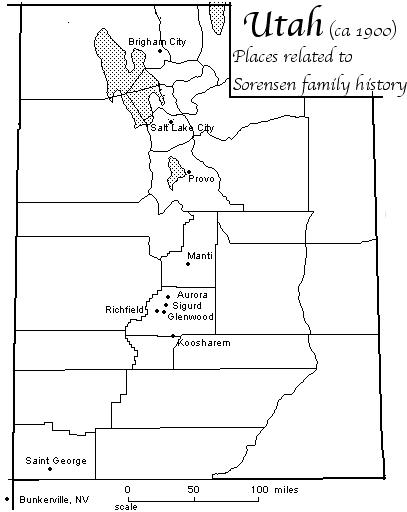
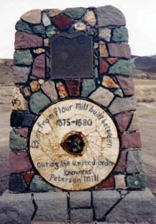
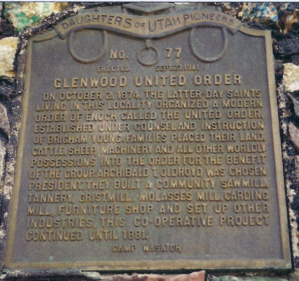
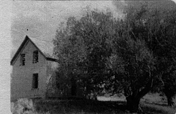
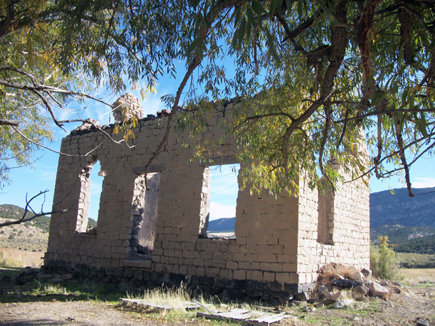
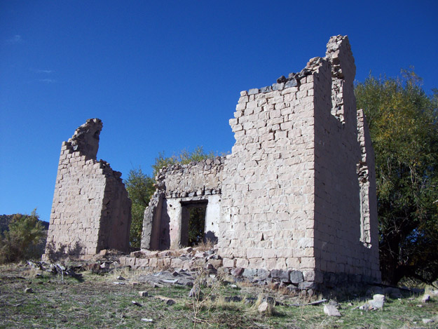
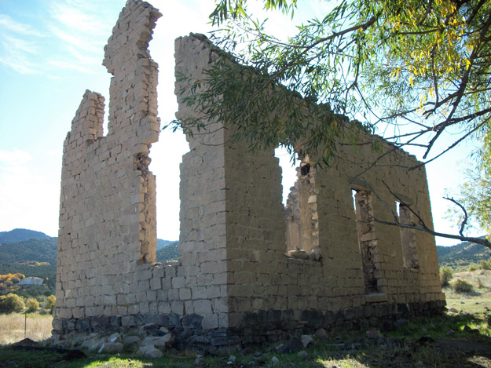

Chapter 5
Chapter 7
Back to Table of Contents.
Chapter 6
Hans and Andrew William were finally with the rest of the family. It took almost three years to bring them all together from Denmark to Utah. Now they faced the challenge of making a new life in "Zion." According to the Wallace Sorensen history, Hans worked as a stonecutter on the Salt Lake Temple in the first years following their immigration. 1 Another history says that "He worked on the Salt Lake Temple cutting rocks for it, which he was an expert. It is said he helped set the stone on the clasping hands either on the east or west of the temple near the top." 2 Other histories say that it was one of the moon stones. It is significant that Hans, a stone cutter, would be able to show his dedication to the Gospel by being part of the Salt Lake Temple construction.
Hans and his family did not stay long in Salt Lake City. According to the Glenwood Ward records, Ane and their son Parley moved into Glenwood on March 19, 1873 from Salt Lake City. 3 The Glenwood Branch records, in an earlier book, showed Caroline arriving in Glenwood on April 13, 1873 (from Salt Lake City) recommended by James Leach. 4 James Leach was the bishop of the 2nd Ward in Salt Lake City. 5 A previous bishop recommended a member to the bishop of the member's next ward. 6 This recommendation note gives us an idea of where the family probably lived in Salt Lake City. The boundaries of the Second Ward were: Third East, Sixth East, Sixth South and Ninth South. 7 This might be where they rented their home in Salt Lake City.
Most immigrants, as they arrived in the Salt Lake Valley, were assigned by L. D. S. church leaders to settle in various locations in the territory, particularly where their skills or resources were needed in building up the Kingdom of God. Glenwood is in Sevier County, about 150 miles south of Salt Lake City. Some writings in family histories mention that they moved to Richfield (near Glenwood), but if so, it must have been temporary, because they were in Glenwood during this time, according to LDS church records. Nothing in these Glenwood records mentions Hans by name, but we assume he arrived with Ane and Parley.

Family tradition says that Hans was involved in building a gristmill in the Richfield or Glenwood areas. Granddaughter Anna Delilah recorded: "Later the family moved to Richfield, Utah, and grandfather built the old stone grist mill as well as several other buildings erected at that time. Then the family moved to Glenwood and he built two grist mills in that town. He also built the old Peterson home and many others of the fine old substantial stone homes of Glenwood. Grandfather Sorensen also worked as stone cutter on the Manti Temple." 8 Andrew William mentions in his history that he came to Glenwood to visit his father in 1874. 9 (It was there that Andrew William met his future bride, Mary Steffensen.)

The monument in Glenwood, with the plaque, also showing a grinding stone from the mill.
Caroline's future husband, Archibald Waller Overton Buchanan, lived in Glenwood with his three wives. Archibald had been the Branch President of Glenwood, and was, on October 5, 1873, sustained as the first counselor to Bishop G. F. Willson. 10 Meetings of the church were then held in a school house. The Branch and Ward records give details of meetings where plans for the building of a ward meeting house were discussed. In the second of these two meetings, held on January 25th 1874, Bishop Willson was elected superintendent of the building process. The details of the proposed building structure were outlined. The building was described as being "25 x 40 feet in the clear, with a galery [sic] walls of red sandstone 17 feet high. Hance [sic] Sorensen was chosen Boss Mason and Abram Shaw Boss carpenter." 11
The members of the Glenwood community were asked to live the United Order. The Sorensen family were involved in this undertaking. The United Order was a covenant agreement in which members surrendered their property and materials to the community (the Ward) and were then given stewardship in areas to best benefit the welfare of the community as a whole.

Pioneer plaque commemorating the Glenwood United Order
The United Order was organized in Glenwood on April 22, 1874. 12 The document recording the event in the ward records reads:
"Glenwood April 22d 1874 [sic] Copy of Agreement
"We the undersigned do mutualy [sic] and severaly [sic] agree to join the United Order in the Church of Jesus Christ of Latter Day Saints with the full intent and purpose of living to its spirit and objects to this end we have hereunto affixed our names - "
Under that heading, Hans Sorensen, Ane Sorensen and their daughter, Caroline all signed their names in the first (left) column. A. W. Buchanan and his three wives (at that time) were listed on the next page. 13
During this time, Hans and Ane were finally able to go to Salt Lake City to receive their temple blessings. They were sealed in the Endowment House on October 13, 1874. 14 Their endowments took place on the same date. 15 It had been over sixteen long years since joining the church in Denmark. They were finally able to enjoy the blessings of the Temple. Their children would not be sealed to them until 1889.
In the 1870's there was a practice in the church of baptizing people a second time to show faithfulness in the challenges faced by the church and the members. In the Glenwood record, the heading states: "Rebaptized with covenants to observe the rules to the United Order." According that record, Caroline was re-baptized on July 18, 1875, by A [Archibald]. W. Buchanan. 16 There didn’t appear to be re-baptism dates for Hans, Ane, or Parley. Caroline was married to Archibald as his fourth wife about a year later, on September 27, 1876.
The United Order in Glenwood was a fairly successful enterprise for about 5 years. The family and Glenwood histories quote from Joseph Smith, An American Prophet, saying: "By far the most successful effort ever put forth at any time in Mormondom was found in the settlement … which went by the name of Glenwood." 17 In the history of George Peter Pectol, another person of Glenwood who was part of this system, we find a description of some of the process, extent and experiences that were part of the United Order. He starts by saying: "I turned my property into the Order and began work 1 December 1874." 18 He then goes on to detail his specific duties. We know that Hans was a stone mason and worked on a number of buildings in the Glenwood area, probably as part of his duties in the United Order. From Pectol's history, it is evident that the Order covered a large geographical area, including King's Meadow and Grass Valley, where Koosharem is situated. Pectol reported one of his days: "September 21, 1875: Helped survey Kings Meadow. … " 19 Later in his writing, Pectol gives a statement concerning the Order: "Nov. 19, 1878: The United Order has not been a success. Preparing to go to Grass Valley and build a house and ditch." 20 By that time, Hans and his family had also moved to Grass Valley.
Hans probably moved his family to Kings Meadow in 1876. 21 Kings Meadow is a small valley in a canyon about 7 or 8 miles east of Glenwood. There was a road going over the pass directly east of Glenwood, but they might have traveled by way of Sigurd and down to that little canyon because that path was less steep and winding. The meadow is about 5 miles south of Sigurd. Today it is just to the east of Utah Highway 24, near the reservoir that is now in that small valley. Though it must have been generally uninhabited, the place is mentioned a few times in histories, including a report that the Ute Chief, Arapeen, was buried there in 1860. 22 Wallace Sorensen lists Kings Meadow chronologically after Koosharem: "Grandfather moved several times after living in Glenwood. He moved to Koosharem then up to Kings Meadow Canyon, where he built the little rock cabin that is partly standing. Here they were very poor and endured many hardships during the cold winter." 23 It seems more likely that his time in Kings Meadow was prior to their living in Koosharem, because the later Aurora church records refers to the family as coming directly from Koosharem. Koosharem is 24 miles south of Kings Meadow, in Grass Valley.

The Kings Meadow homestead (picture taken August 1978 - probably by Kathleen Bartholomew)
Below are pictures of the same structure taken in October 2011, by Joseph Buchanan.

Today, the ruin of a house is near the reservoir off highway 24. It is probably the one referred to by Wallace. The coordinates of that ruin are: 38° 47' 12.39" N 111° 55' 37.28" W, elevation 5932 feet. Kings Meadow is referenced in the Glenwood Ward records (minutes): "A. W. Buchanan said there was a choice good place for our dairy near the head of Kings Meadow where there is a large spring and a great abundance of grass." 24 In Ane's history, it gives some more details of their experience: "Hans was given permission to homestead some land a few miles east of Glenwood, called Kings Meadow Canyon. It was a beautiful area with a creek running through it. Hans built a two-story rock home, and Ane decorated the plastered walls with stenciled artwork and cheerful colors. Together they planted trees, flowers and garden. They cultivated the ground for farming and planted grain. They were happy with their home and land for awhile. Unfortunately the farming failed, as the water was too scarce for the crops to mature, and the soil was poor." 25
1. Wallace Sorensen, unpublished history.
2. Brief History of Grandfather Hans Sorensen from the Alma Sorensen family, unpublished.
3. Glenwood LDS Ward and Branch records, Family History Library, Salt Lake City, UT. Film 0025980, item 1, page 6, line numbers 17 and 18 on the page. The first book (item 1) on the film is Ward records in a printed, columned format.
4. ibid, item 4, page 73, near the bottom. The fourth book (item 4) is an older record, specifically of the branch before it became a ward. Apparently both this and the first book (the newer one) were used at the same time. Some entries of the older book are newer than entries in the newer one.
5. See Deseret News, 1873-03-19 page 7 and Deseret News, 1874-06-03 page 12.
6. Doctrine & Covenants 72:25 (L.D.S. scripture).
7. Hannah's Salt Lake City Directory, 1873, http://www.rootsweb.ancestry.com/~utsaltla/archive/directories/0940049_1_1873/frame.html
8. Hans Sorensen biography by Anna Delilah Buchanan Poole, unpublished.
10. Glenwood LDS Ward and Branch records, page 118.
14. L.D.S. Church, Endowment House sealings, Book J, FHL Special Collections, film 0183400, p 59, #758. Sealed by Pres. H. W. Wells, witness John E. Eisgren.
15. L.D.S. Church, Endowment House endowments, Volume H FHL Special Collections film 00183407. Ane Sorensen on page 176, #8; Hans Sorensen on page 177, #13.
16. Glenwood Ward records, item 1 of FHL film 0025980, page 7
17. Joseph Smith, An American Prophet, John Henry Evans, New York : Macmillan, 1944, p 246.
18. Founded on Faith - The History of Glenwood, by Iva Lee Sorensen, p 306.
21. Brief History of Grandfather Hans Sorensen, unpublished.
22. Mentioned in The Deseret Weekly volume 43, page 219, [Vol. 43, No. 7. August 8, 1891], in a description of a tour led by Ephraim Hanks from Loa to Richfield. Narration by Andrew Jenson, dated June 28, 1891.
23. Sorensen, unpublished history.
24. Glenwood Ward Records, book 4, page 120, entry dated Sunday March 22, 1874.